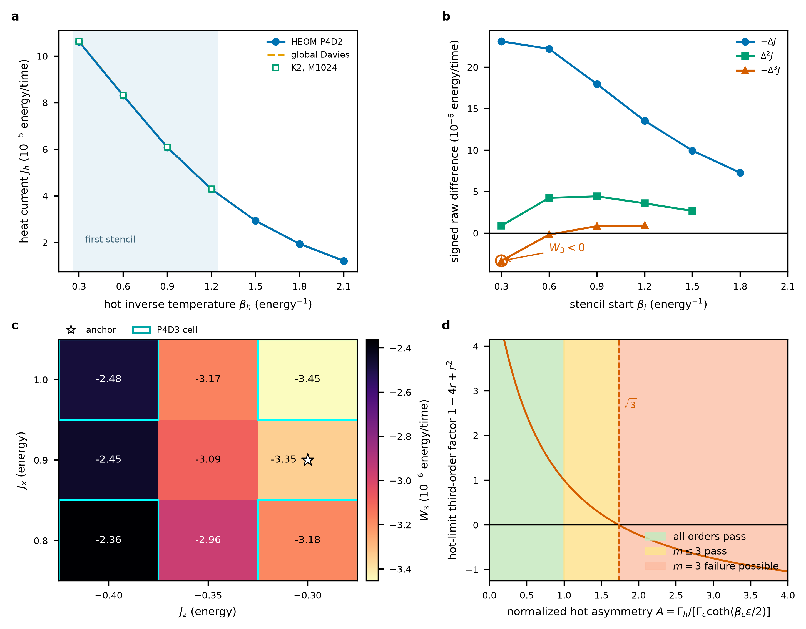

\(J\ge0\)
order 0 · one currentDirection
Heat follows the imposed hot-to-cold bias.
if it failsCurrent reversal
M14 · PASSBounds on Thermal Cumulants · P10 project
Four steady mean-current measurements can reject a stationary two-terminal bosonic representation with a fixed, passive, temperature-independent nonnegative transmission—even when positivity, monotonicity, and convexity all pass.
01 · motivation
Each added current probes a subtler response: reversal, NDTC, β-curvature, then the hidden four-point face.
Heat follows the imposed hot-to-cold bias.
Heating the hot bath raises the current.
\(J(\beta_h)\) bends upward; the middle point stays below its chord.
The next Landauer face combines all four currents.
02 · literature background
Existing work supplies the transport framework, fluctuation statistics, and nonlinear examples; P10 connects them to a four-node mean-current test.
NEGF establishes the bosonic transmission picture for harmonic junctions.
Dhar & RoyFluctuation symmetry and cumulant-generating functions characterize harmonic transport.
Saito & DharHEOM, strong-coupling, and rectification studies reveal current shapes beyond simple baselines.
Kato–Tanimura; Ming; Liu; WangHidden NDTC and a modern analysis of the harmonic interfacial Landauer scope.
Zhang; Dai & TianNo exact collision was found for a four-temperature, first-failing (m=3) mean-current witness.
Focused audit; not an absolute priority claim03 · comparison class
We test a fixed passive bosonic Landauer transmission—not every harmonic-looking or classical model.
Hot inverse temperature \(\beta_h\) varies; cold inverse temperature \(\beta_c\) is fixed.
\(\tau(\omega)\ge 0\).
\(\tau\) is independent of both bath temperatures.
Two-terminal bosonic transport with a steady mean current.
\(0<\beta_h\le\beta_c\) for the order-zero sign.
04 · our theory
That structure forces every signed derivative—and every signed divided difference—to have a fixed sign.
Expand the temperature-dependent Bose factor.
Absorb the fixed cold contribution into a constant.
Passivity makes \(F\) completely monotone.
For equal spacing, divided differences reduce—up to a positive factor—to signed forward differences. Order zero is the separate hot-domain statement \(J\ge0\).
05 · four-temperature protocol
Measure the current at four equally spaced inverse temperatures: \(\beta_j=\beta_0+jh\).
Observed \(W_3<0\) ⇒ reject the null.
06 · validation system
A small, controlled model lets us compare HEOM, global Davies, and a nonsecular second-order solver.
07 · anchor result
Three solver pipelines agree on the sign and close magnitude of the violation.
08 · numerical confidence
Agreement is not inferred from one solver or one truncation.
09 · parameter robustness
Finite grids establish strict sampled margins and therefore open neighborhoods—not a proof for the full enclosing box.
Davies grid rows pass orders 0–2 and first fail at \(W_3\).
HEOM outer corners show the same face pattern.
Central HEOM slice remains negative; closest \(W_3=-2.3612\times10^{-6}\).
Depth-3 drift at four audited corners.
10 · scope control
The witness excludes a transport representation; it does not uniquely diagnose a quantum mechanism.
The audited 100:1 finite stencil gives \(W_3=-1.92443\times10^{-3}\).
11 · experimental certificate
The same four coefficients define both the witness and its uncertainty.
Use the full covariance matrix when temperature or current errors are correlated across nodes.
Independent, equal current errors.
Equal absolute-error model; alternatively <0.278% for equal fractional errors.
Uniform deterministic per-node envelope.
12 · potential applications
Its best role is to decide when a fixed harmonic transmission is no longer an adequate baseline.
A low-measurement-cost falsification gate for a fixed passive Landauer baseline.
Supported nowSignals that saturation, temperature-dependent contacts, inelastic/self-consistent channels, or nonthermal baths may be needed.
Supported as alternatives—not identifiedPlan repetitions for a chosen stencil using the full \(\mathbf c^{\mathsf T}\Sigma\mathbf c\) error budget.
Supported in model unitsCross-check Davies, K2, HEOM, and future solvers with a sensitive shape statistic.
Demonstrated in P1013 · potential application I
The same four currents compare a small inverse-temperature swing with one three times larger.
At the M14 anchor, β̄ = 0.75 and a = 0.15. The identity is exact for the four finite nodes—no derivative approximation is used.
where ηcomp ≡ S(3a) / [3S(a)]: the normalized gain cannot decrease.
Tripling the input amplitude gives 2.849 × the current swing—5.02% below triple scaling.
14 · potential application II
The gate changes fluctuation amplitude while leaving its mean shift in β equal to zero.
The probe toggles between the inner nodes β₁ ↔ β₂.
The probe samples β₀ ↔ β₁ and β₂ ↔ β₃ under g = ±2a.
2.22078 × 10⁻⁵ → 2.05351 × 10⁻⁵ · 7.53% attenuation
Davies / K2 M1024 = 0.9252 / 0.925015 · conclusion
Theory. The hot-dependent part \(F\) is a positive Laplace transform and \(J(\beta_h)=F(\beta_h)-F(\beta_c)\), forcing an infinite divided-difference hierarchy.
Evidence. M14 passes positivity, monotonicity, and convexity but violates \(W_3\ge0\), consistently across HEOM, Davies, and K2.
Meaning. The violation rejects the stated fixed, passive, temperature-independent Landauer representation; it does not identify a unique microscopic mechanism.
A1 · theorem details
Do not substitute an equal-grid finite difference when temperature nodes are nonuniform.
Contacts, self-consistent forces, or material properties change with bath temperature.
The passive Bose-reservoir reduction no longer applies.
Hidden reservoirs can change the two-terminal representation.
Transient data are outside the steady-current theorem.
A2 · validation receipt

manifested content files passed SHA-256 verification
243 Davies + 32 HEOM outer + 9 HEOM central processed records
HEOM depth-3 corner refinements
maximum current-balance residual across HEOM outer points
native RGB evidence figure; vector PDF retained
A3 · selected references
P10 Heat-Current Shape Witness · README, theorem, literature audit, frozen receipt, and evidence package · audited 8 August 2026.